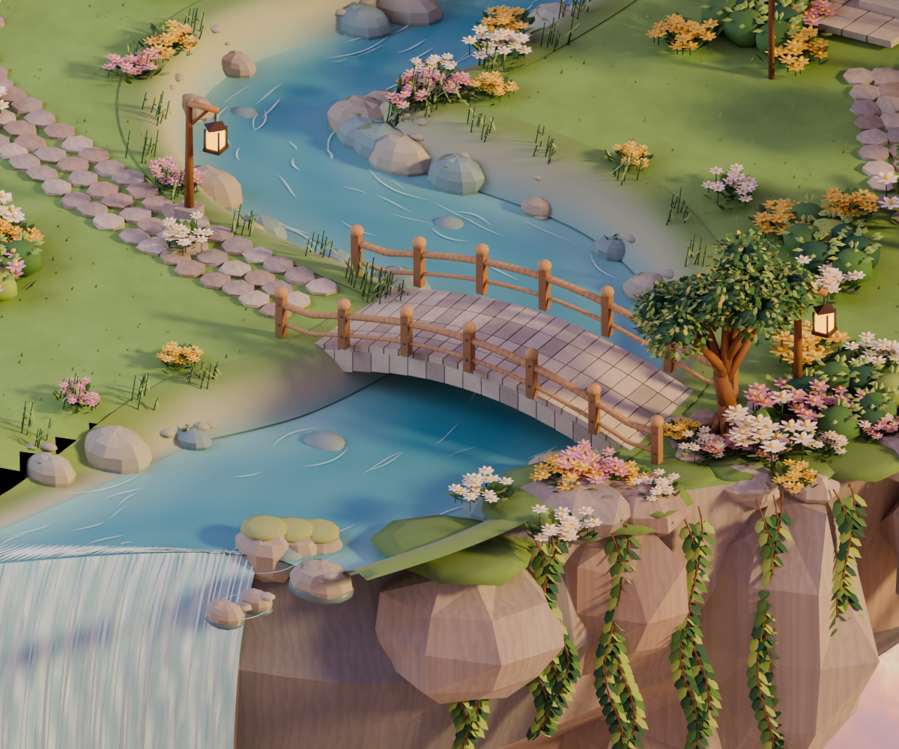
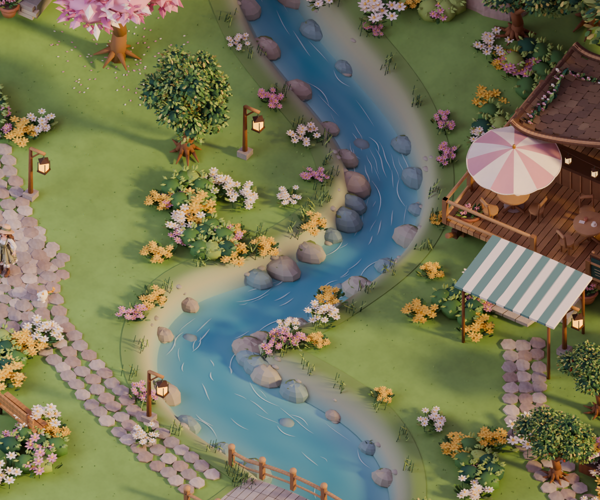
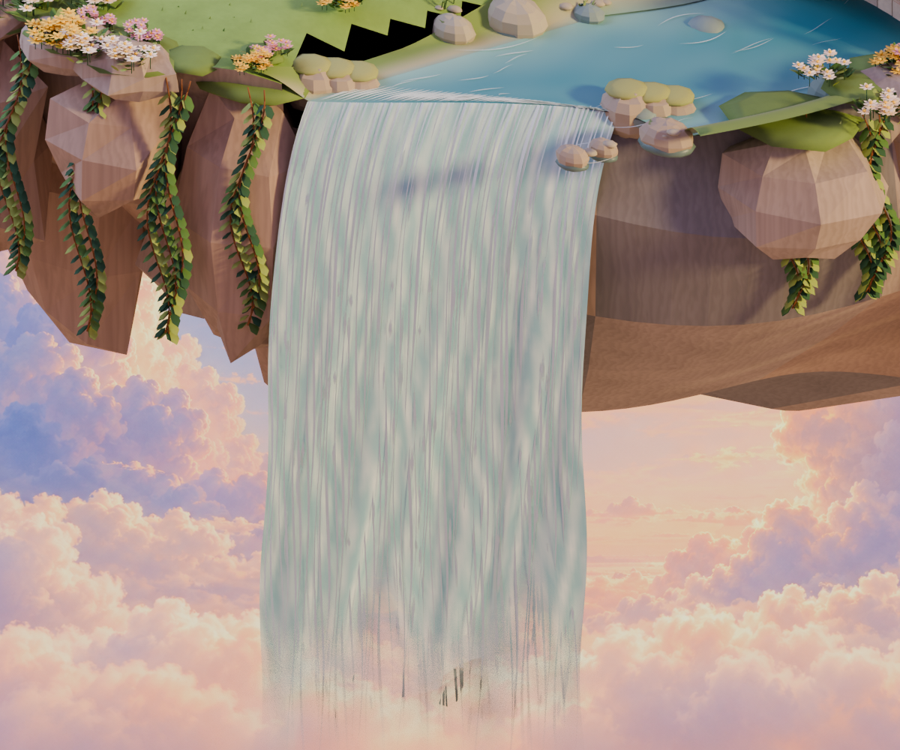
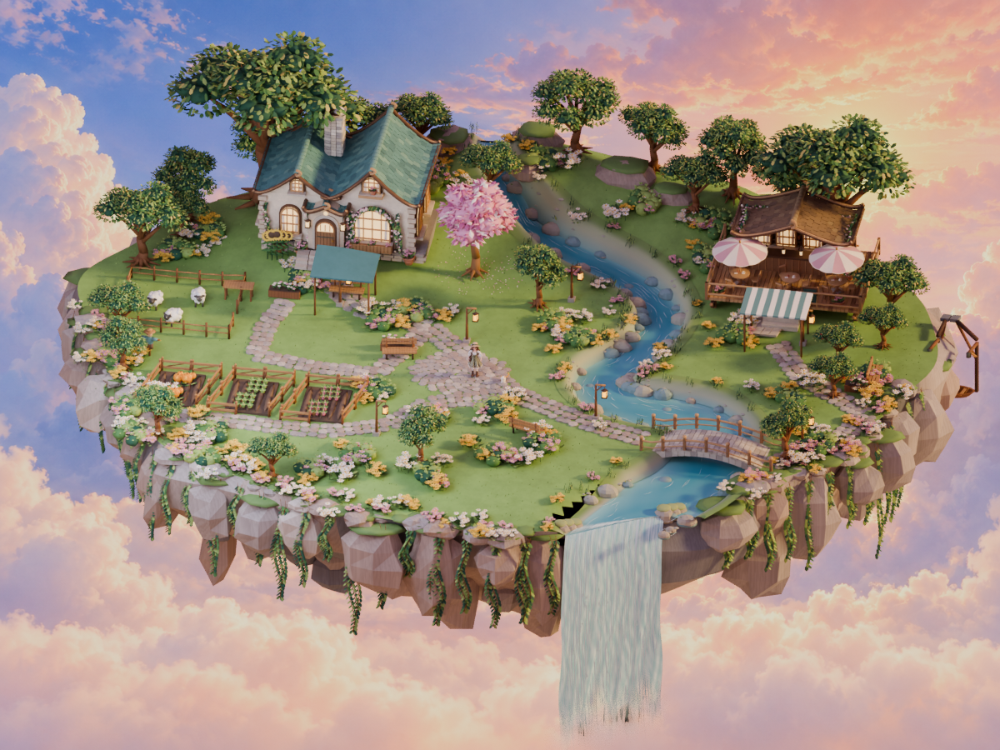

按约定顺序完成第一步：浅岸与深水的色差、绕石水纹、连续河岸、分块拱石和木栏杆，以及有泡沫与渐隐的瀑布。保留建筑精修、粉色花树与现有分区。

桥面磨边、拱石、木栏连接和金属钉细化；桥头贴合地形，行走高度与模型实测一致。

沿弯曲河道连续过渡的岸线，加入湿石、苔藓、芦草和稀疏水纹。

水帘连接实际河口，加入粗细、长短变化与断续白沫；网页中流水、飞沫和薄雾持续运动。

以上为本地 Blender 离线预览；动态网页使用减面模型、实时光照与水面着色，效果会有差别。本轮仍是向参考图逐步靠近，尚未达到逐像素一致。
查看住宅和咖啡厅精修 · 打开动态小岛，选择「溪流石桥」镜头